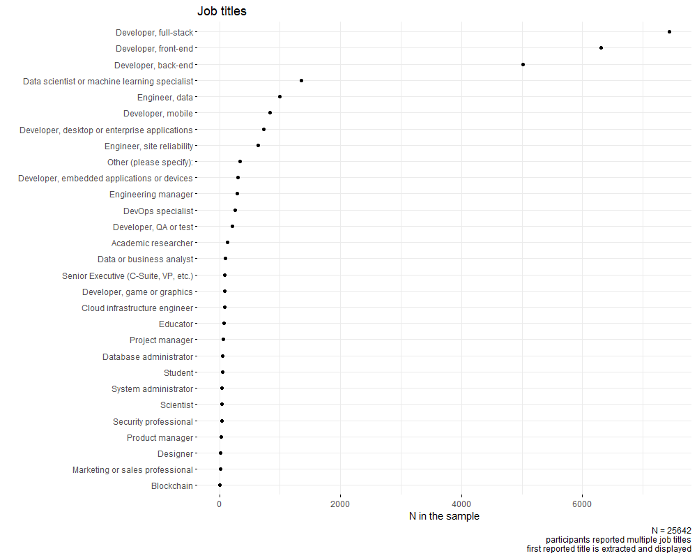
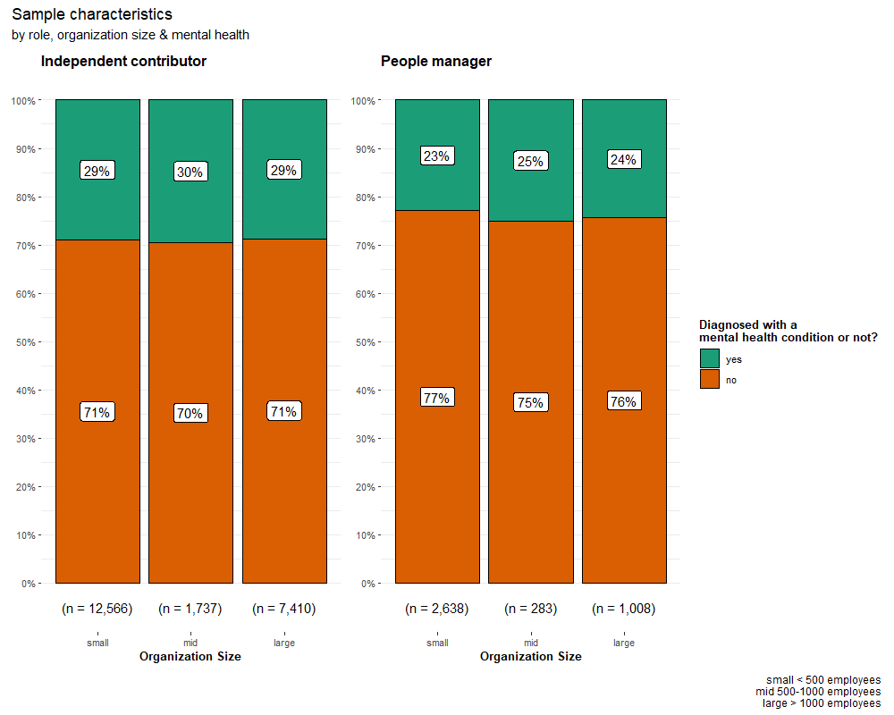

Is your organization caught up in a knowledge silos situation?
Knowledge silos in the workplace can lead to a lack of innovation and productivity. When employees are isolated from each other, they are less likely to share ideas and collaborate, leading to stagnation and missed growth opportunities. Knowledge silos lead to a duplication of effort, which is a waste of resources. When employees are not aware of what others are working on, they tend to end up duplicating work that has already been done, leading to inefficiency and wasted time.
Knowledge silos are usually a result of lack of communication and coordination. When employees are focused only on their own team’s goals, they may not be aware of how their work impacts others in the organization, leading to miscommunication and missed deadlines.
Even worse, knowledge silos lead to a lack of trust and a sense of “us vs. them” mentality in the workplace. When different teams are in an unhealthy competition and get caught up in knowledge silos, they may begin to view each other with suspicion and resentment, leading to a toxic work environment.
Tackling knowledge silos is essential for organizations that want to remain competitive. To stay ahead of the curve, companies need to be agile and able to respond quickly to changes in the market. This requires collaboration and the free flow of information across departments and teams.
Stack Overflow’s annual community survey offers data on the most frequently utilized technologies, tools, and frameworks within the developer and data practitioner communities. The 2022 survey features questions on attitudes towards knowledge silos and the frequency of seeking assistance outside of the immediate team. Find out more at here. I start by quoting the website:
Let’s go beyond this. The survey has >73.000 participants. Though, when filtered to actively working community members and removing the missing values, you can get a sample of 25.642 individuals with various job titles. The job titles and corresponding sample sizes are shown in the figure below.

In addition to standard demographics such as age, gender, and education level, the survey includes items on specific roles, organizational size, years of experience, and mental health. Mental health is operationalized as self-reported mood or emotional disorders, anxiety disorders, learning disabilities, concentration problems, or autism. If any of these conditions are reported, there is a mental health issue; otherwise, not. The plot below shows the percentages of participants with and without mental health issues across different roles and organization sizes.

The following variables went into the analysis.
| Please rate your level of agreement with the following statements | |
|---|---|
| I have interactions with people outside of my immediate team. | |
| Knowledge silos prevent me from getting ideas across the organization (i.e., one individual or team has information that isn’t shared with others) | |
| I can find up-to-date information within my organization to help me do my job. | |
| I am able to quickly find answers to my questions with existing tools and resources. | |
| I know which system or resource to use to find information and answers to questions I have. | |
| I often find myself answering questions that I’ve already answered before. | |
| Waiting on answers to questions often causes interruptions and disrupts my workflow. | |
| How frequently do you experience each of the following? | |
| Needing help from people outside of your immediate team? | |
| Interacting with people outside of your immediate team? | |
| Encountering knowledge silos (where one individual or team has information that’s not shared or distributed with other individuals or teams) at work? | |
| Age | |
| Gender | Coded as other, man, woman |
| Education level | Coded as low, high, higher |
| Work Experience | How many years of working experience do you have? |
| Organization size | Approximately how many people are employed by the company or organization you currently work for? |
| IC vs. PM | Are you an independent contributor or a people manager? |
| Mental health | Which of the following describe you, if any? Please check all that apply. |
I threw all these variables in a Bayesian learning network (BLN) to determine the structural relationships. BLN is a powerful tool that allows for modeling complex relationships between variables. In a nutshell, the outcome outlines the causal skeleton of the mechanisms by representing the probabilistic independencies/dependencies between variables.
The following plot should make it intuitive. The nodes in the network are the survey items; the edges are the parameterized relationships – the coefficients are displayed with negative or positive signs.
BLM output displays the structural relationships across variables. All paths show standardized coefficients. The layout is optimized for coefficient visibility and cause -> effect order. It may look a bit cluttered at first glance but let me walk you through it. Read on.
Let’s start with age, gender, and education level: they do not impact anything whatsoever, so they are disconnected from the network.
The graph shows the three most central outcomes at the bottom. The following three items have the highest incoming centrality measures in the network (many other items in the network predict these items – these are the most central outcomes).
The frequency of needing help from outside the immediate team is somewhat neutral. More interaction outside the team has the strongest positive association with this outcome. Yet, many paths lead to this outcome; many are straightforward: i.e. managers have more frequent contact outside their immediate team (very weak relationship, though with a 0.03 coefficient). Knowing where to look has a weak negative association (-0.05). These are negligible paths. The size of the organization has an indirect negative (coefficients) path via “ I know which system or resource to use to find information & answers to questions I have ”. In other words, the larger the organization, the harder it is to access relevant information; however, the more you know about where to find the relevant info, the less frequent contact you have outside of the immediate team.
Though, the same outcome of the “ high frequency of needing help outside of the immediate team ” also has a dark side. This item is also predicted by the frequency of encountering knowledge silos and having to wait for answers and workflow interruptions.
The frequency of encountering knowledge silos is the most central outcome; it is predicted by 7 other variables in the network. There are four strong predictors of this outcome, the strongest being the “ knowledge silos preventing individuals from getting ideas across the organization ” item. Another strong positive path is from “ frequency of interacting with people outside of immediate team ” to the high knowledge silos encountering frequency. Those who complain about having to wait for answers and workflow interruptions are the ones encountering knowledge silos frequently. Not being able to find quick answers to their questions also leads to frequent knowledge silos barriers.
Finally, the strongest path to “ I often find myself answering questions that I already answered before ” is again “ waiting for answers that cause workflow interruptions”. “ Knowledge silos preventing individuals from getting ideas across ” is the other strong predictor of repeating oneself. Perhaps one other noteworthy finding is that there is also a direct path from the independent contributor vs. manager item to this self-repetition item, which probably indicates that managers tend to repeat themselves more; my guess is that managers do this for multiple stakeholders.
In short, these three central outcomes suggest that there is a lot of wasted valuable time and effort in some of the work environments and interactions.
Let’s move on to the most central predictors (the items with the most outgoing edges; causing multiple things). These are the following.
Let’s again treat “ I have interactions with people outside of my immediate team ” as a neutral statement and focus on the other three.
Those who strongly endorse the “ I am able to quickly find answers to my questions with existing tools and resources ” statement are pretty high on “ I know which system or resource to use to find information and answers to questions I have ” and “ I can find up-to-date information within my organization to help me do my job ”. Those who are quick to find answers to their questions with existing tools and resources are the ones who do not frequently encounter knowledge silos, they don’t have to wait for answers, which cause workflow interruptions, and they also don’t report that knowledge silos prevent them from getting ideas across.
Those who suffer from knowledge silos (preventing from getting ideas across) report waiting on answers and having to repeat themselves. The frequency of their knowledge silo encounter is high, and they cannot find the information they need. Again, wasted valuable time.
Finally, mental health is a central predictor, but its predictive power is relatively low. The strongest connection from mental health to the rest of the network is a negative path to “I am able to quickly find answers to my questions with existing tools and resources”. So, those suffering from mental health issues report being unable to find answers quickly with the existing tools and resources.
The overall picture reveals a major potential problem: the waste of time caused by knowledge silos and the lack of efficient communication within organizations.
Knowledge silos hinder productivity, diminish innovation, cost money, lead to low employee engagement, and ultimately lead to negative customer experience.
First of all, this is a broad organizational culture issue, and I will recite something that I learned at Hofstede Insights: there is no universal culture that is best for all organizations. The appropriate culture is contingent on context and strategic goals. The optimal culture for an organization should align with its business goals, and an organization’s culture should support its strategy. Otherwise, there is a misalignment, an incongruence, or a disconnect.
If an organization promotes competition among teams, then it is natural for information to be withheld. On the other hand, if an organization promotes cooperation, then knowledge silos are an obstacle.
If an organization wants to eliminate knowledge silos, it is best to incentivize collaboration. There are multiple ways of achieving this, such as restructuring teams for cross-reporting, and providing cross-training opportunities to foster stronger and more meaningful relationships across employees. Incentivizing collaboration and promoting transparency also enables different teams to understand how their work impacts others and the business as a whole.